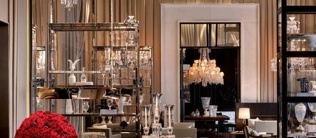
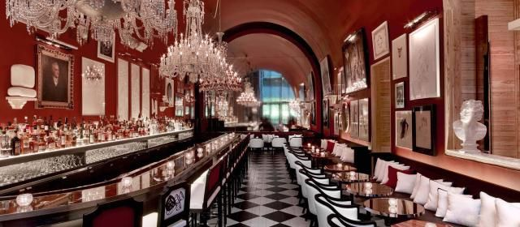
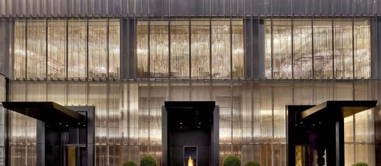
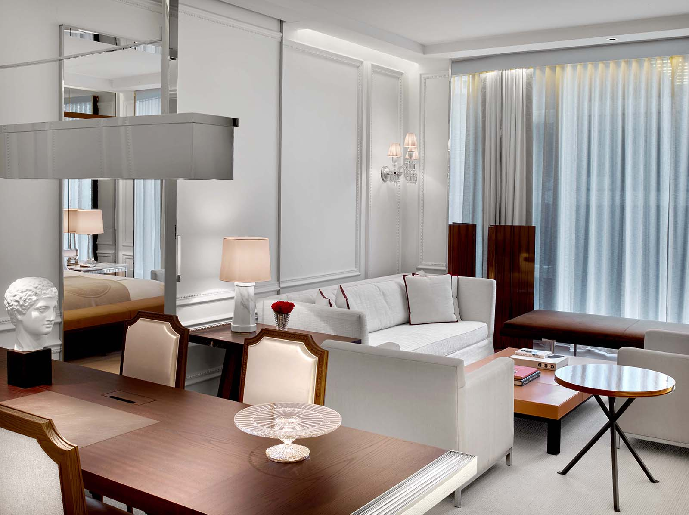
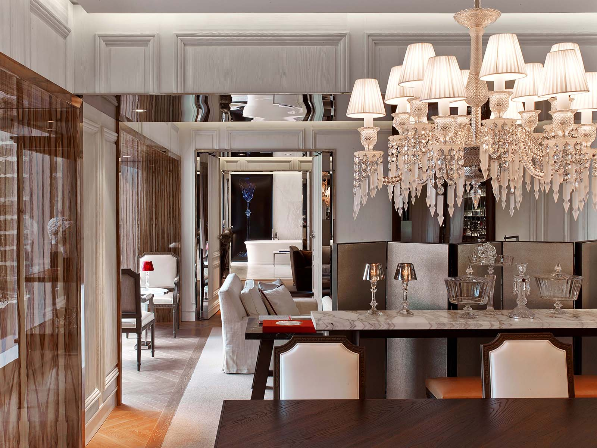

Favorite Hotels
Baccarat Hotel New York is for clients who want Midtown to feel private, glamorous, and extremely polished.
Baccarat is not the most understated hotel in New York, and that is exactly the point. It feels like stepping into a jewel box across from MoMA: crystal, deep red accents, dim lighting, beautiful public rooms, and a level of polish that works really well for clients who want Manhattan to feel special from the second they arrive.
What makes it unique
The hotel has a true point of view: French crystal-house glamour, not generic Midtown luxury.
The Baccarat name matters here. The design has drama, but it is still composed. For the right client, the Grand Salon, The Bar, Spa de La Mer, and the suite Attaché benefits make the whole stay feel considered, personal, and very New York without becoming loud.
Best For
Polished Midtown glamour
Best for couples, design-focused clients, MoMA/Central Park trips, and travelers who want the hotel itself to feel like part of the event.
Known For
Crystal, salons, and suites
Grand Salon, The Bar, Spa de La Mer, an indoor pool, and suites with dedicated Attaché benefits.
Stay
114 rooms and suites
Room product starts spacious by Manhattan standards, with suite options from 645 square feet to over 2,000 square feet.
Client Type
Discreet but glamorous
For clients who like refined service, beautiful interiors, strong dining, and a hotel that feels high-end without needing to explain itself.



The overall setup
Baccarat sits at 28 West 53rd Street, directly in that Midtown pocket near MoMA, Fifth Avenue, Central Park, Rockefeller Center, and some of the city’s best shopping and restaurants. The location is easy, but the hotel does not feel like a standard business address. It feels more ceremonial: arrive, have a drink, settle in, and let the city happen around you.
Rooms, suites, and the ones I would watch
The suite program is one of the reasons Baccarat belongs in the Favorite Hotels conversation. The Classic Suite is already a real New York suite at about 645 square feet, while the Prestige Suite jumps to about 800 square feet with city views and a more residential feel. The Baccarat Suite is the showpiece one-bedroom at about 1,740 square feet, and the Baccarat Two-Bedroom Suite reaches about 2,190 square feet for clients who want a proper top-floor, entertaining-capable stay.
- Classic Suite: about 645 square feet, separate living room, king bed, interior view
- Prestige Suite: about 800 square feet, city view, separate living room, king bed
- Harcourt Two-Bedroom Suite: about 1,250 square feet, two-bedroom layouts for families or small groups
- Baccarat Suite: about 1,740 square feet, top-floor one-bedroom suite with serious arrival energy
- Baccarat Two-Bedroom Suite: about 2,190 square feet, top-floor layout with living, dining, butler’s pantry, and connecting bedrooms


Dining and drinks
This is a hotel where the food and beverage spaces really matter. The Grand Salon is the elegant all-day room for breakfast, lunch, dinner, cocktails, and that polished Midtown meeting energy. The Bar is the moodier, more glamorous option, especially before or after dinner. Baccarat also has afternoon tea, in-room dining, and culinary direction from Gabriel Kreuther, which gives the hotel a more serious dining backbone than a typical lobby lounge situation.
Wellness, pool, and service
The Spa de La Mer is a big part of the value here, especially for clients who want the hotel to be more than a place to sleep. There is also a 55-foot indoor pool, fitness center, house car access subject to availability, and suite-level Attaché perks that can include early check-in, late checkout, packing and unpacking, pressing, priority Grand Salon and Bar seating, pool cabana access, and for the highest suites, airport transfer and hotel credit benefits.
Who it is best for
- Couples who want a glamorous New York weekend
- Clients doing MoMA, Fifth Avenue, Central Park, and Midtown dining
- Design-minded travelers who care about the feeling of the hotel
- High-end clients who want suite benefits and more personal handling
- Small families or multi-generational travelers using the Harcourt or Baccarat two-bedroom layouts
My honest take
Baccarat is a very strong pick when the client wants a New York stay that feels dressed up. It is not the quietest, most residential option like The Mark, and it is not the traditional park-side answer like the Ritz. It is its own lane: glossy, French, crystal-lit, and extremely polished. When that is the mood, it hits.